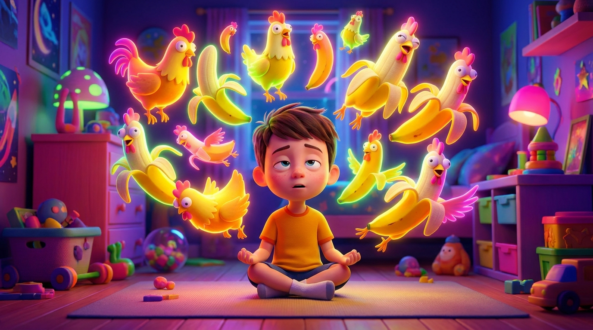
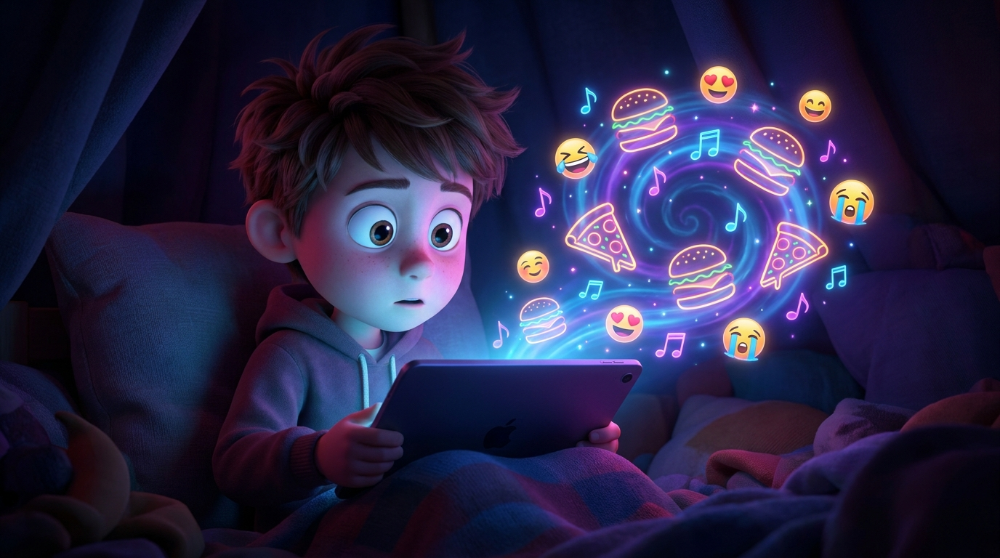
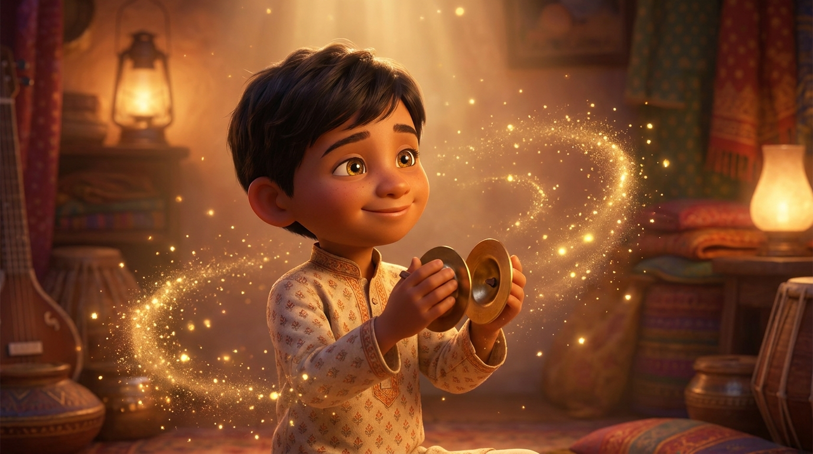
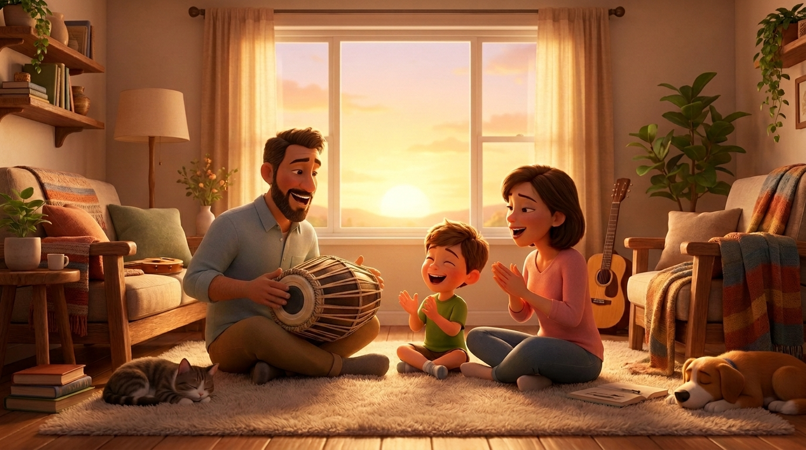

Чем мы наполняем умы наших детей?

Наверняка многим родителям до боли знакома такая картина: ваш пятилетний или шестилетний ребенок бродит по дому, играет в свои игрушки и уже третий час подряд напевает какую-то прилипчивую, лишенную всякого смысла фразу из интернета. Что-то вроде вирусного трека «Chicken banana» или очередного бессмысленного звука из TikTok или YouTube Shorts.
Вроде бы ничего страшного, обычная детская забава. Но почему-то от этого монотонного повторения у взрослых начинает немного звенеть в ушах, а сам ребенок, если его попытаться остановить, часто реагирует раздражением.
Давайте посмотрим на это явление с точки зрения нейробиологии. Современные алгоритмы социальных сетей — это не просто развлечение. Они создают идеальный «цифровой фастфуд». Короткие, ритмичные, сверхъяркие ролики конструируются целыми командами маркетологов так, чтобы запускать в неокрепшем мозге «дофаминовую петлю» — быстрое удовольствие без усилий.

Возникает вопрос: так ли уж безобидна эта привычка потреблять информационный мусор? Детский ум в этом возрасте от природы жаждет повторений — именно так малыши познают мир и чувствуют безопасность. Вопрос лишь в том, чем именно мы заполняем этот сосуд детского восприятия?
Чтобы глубже понять разницу между тем или иным наполнением ума, очень полезно обратиться к древней ведической философии. Согласно Ведам, в нашем материальном мире существует непреодолимая пропасть между названием вещи и самой вещью. Например, если вы изнываете от жажды и будете просто повторять слово «вода», ваша жажда никуда не исчезнет.
Известный духовный учитель А.Ч. Бхактиведанта Свами Прабхупада часто приводил для объяснения этого феномена гениальную аналогию:
«Вы можете повторять "Кока-кола, кока-кола", но очень быстро устанете. Наступит пресыщение, так как это материальный звук».
Вирусные песни вроде «Chicken Banana» — это, по сути, та же самая цифровая Кока-кола. Поначалу они кажутся сладкими, бодрящими и забавными. Но очень быстро они вызывают усталость, внутреннее опустошение и ментальное истощение.
Этот постоянный шумовой фон не питает сознание, не дает почвы для развития воображения — он лишь перегружает хрупкую нервную систему ребенка, делая его гиперактивным и тревожным.

Ведическая традиция противопоставляет этому пустому материальному звуку совершенно иное явление — Шабда-брахман, или трансцендентную звуковую вибрацию. Принципиальное отличие мантры в том, что она неотлична от Абсолюта.
В традиции гаудия-вайшнавизма считается, что Святое Имя не имеет никаких отличий от Самого Всевышнего. Именно поэтому повторение мантры, в отличие от "Кока-колы", никогда не вызывает пресыщения. Напротив, она раскрывает новые оттенки внутренней радости и умиротворения.
Но как это работает с маленькими детьми? Здесь на помощь приходит удивительная концепция Нама-абхаса («тень Святого Имени»). Секрет кроется в том, что духовный звук обладает самодостаточной силой и очищает сознание, даже если произносится неосознанно. Например, в форме стобха — как красивый музыкальный мотив во время игры.
Даже этот неосознанный звук очищает маленькое сердце. Ребенок накапливает невидимый, но самый ценный капитал духовного благочестия, который станет фундаментом для его счастья во взрослой жизни.
Древние Упанишады гласят, что все творение начинается со звука. Это не просто колебание воздуха, это тонкая сила, которая лепит наше сознание. Звуки, которые мы впускаем в умы детей (особенно от 5 до 7 лет), закладывают фундамент их ценностей. В психологии йоги это называется самскарами — отпечатками в подсознании.
Агрессивные звуки формируют беспокойный ум. Возвышенные вибрации — самскару покоя и радости. Наша цель — не заставить ребенка замолчать, а заменить пустой ритм на созидательный и вечный.

Мы живем в цифровом мире, и полностью изолировать детей от интернета не только невозможно, но и не нужно. Жесткие запреты работают очень плохо. Ведическая философия предлагает стратегию «высшего вкуса». Не нужно отнимать у ребенка дешевую карамельку, просто предложите ему спелый манго.
Как внедрить это в семейную жизнь?
Наполняя дом духовным звуком, мы даем детям неподдельную радость, которая никогда не заканчивается.